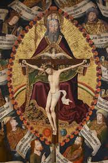
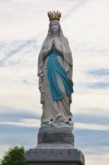

Oraciones
¿Cómo rezar en Lourdes?
Adorar, agradecer, pedir favores y pedir perdón son las cuatro finalidades de la oración. Hay dos tipos de oración: la oración vocal y la oración mental. Esta distinción nos ayuda a entender lo que san Pablo quería decir cuando afirmaba que «debemos orar sin cesar». La oración vocal se hace con palabras. La oración mental es cuando uno entra en su propio corazón y se pone en presencia de Dios. En el silencio, se abre a Dios en un acto de fe y esperanza. La Virgen María durante las diversas apariciones, y especialmente en Lourdes, nos pide, por ejemplo, que recemos por los pecadores. Rezamos también especialmente por nuestros seres queridos, nuestra familia, amigos, y también por los que se encomendaron a nuestras oraciones y por los que ya partieron a la Casa del Padre.
PADRENUESTRO: Padre nuestro que estás en el cielo, santificado sea tu Nombre; venga a nosotros tu Reino; hágase tu voluntad en la tierra como en el cielo. Danos hoy nuestro pan de cada día; perdona nuestras ofensas, como también nosotros perdonamos a los que nos ofenden; no nos dejes caer en la tentación, y líbranos del mal. Amén.
AVE MARÍA: Dios te salve, María, llena eres de gracia; el Señor es contigo. Bendita Tú eres entre todas las mujeres, y bendito es el fruto de tu vientre, Jesús. Santa María, Madre de Dios, ruega por nosotros, pecadores, ahora y en la hora de nuestra muerte. Amén.

GLORIA: Gloria al Padre, al Hijo y al Espíritu Santo, como era en el principio, ahora y siempre, por los siglos de los siglos. Amén.
ORACION: Señor Jesús, tú eres mi roca, mi refugio, mi ciudadela. Sobre ti quiero construir mi vida, mis proyectos, mi futuro. Dame la fuerza. Señor Jesús, te pido por los millones de peregrinos que han pulido la roca de Massabielle con sus manos. Dales fuerza y dulzura. «El Señor es mi Roca, mi fortaleza y mi liberador, mi Dios, el peñasco en que me refugio, mi escudo, mi fuerza salvadora, mi baluarte». (Sal 18,3)
ORACION A NTRA SRA DE LOURDES: Virgen Inmaculada de Lourdes, en medio de tus días gloriosos no olvides las tristezas de la tierra. Mira bondadosamente a los que sufren, a los que luchan contra tantas dificultades, a los amargados y angustiados de la vida. Ten piedad de los que se aman y estan separados; ten piedad de la soledad del corazón, ten piedad de la debilidad de nuestra fe; ten piedad de los que amamos; ten piedad de los que lloran, de los que ruegan, de los que vacilan. Danos a todos la esperanza y la paz. Amén.
